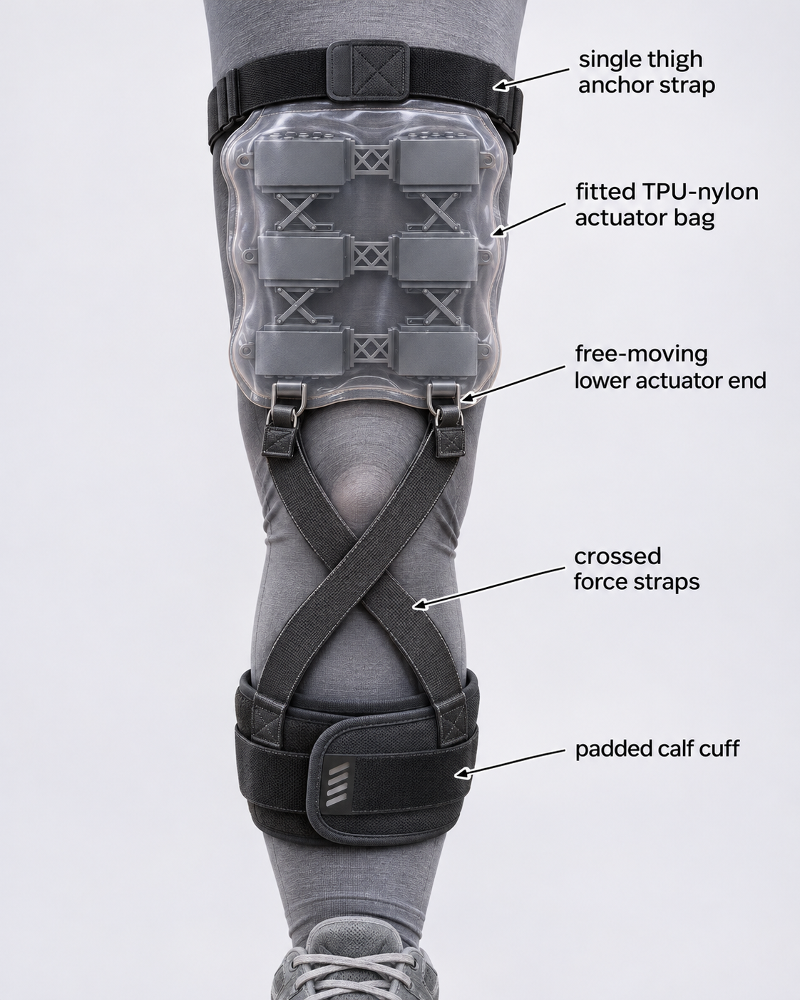

Research
Reviewing pneumatic actuator designs and soft-robotics literature, focused on mild ambulatory SMA.
Senior Design Project
We are designing a soft wearable pneumatic system that assists people with limited mobility in transitioning from sit to stand.
Spinal muscular atrophy (SMA) is a progressive condition that weakens the voluntary muscles, especially those closest to the center of the body and in the legs. It affects about 1 in 10,000 live births. People with mild ambulatory SMA can walk on their own, but standing up from a chair and climbing stairs become increasingly difficult. Our goal is an affordable, lightweight soft exosuit that helps with sit-to-stand, so these users can stay mobile and independent for longer.
Source: Muscular Dystrophy Association.

Reviewing pneumatic actuator designs and soft-robotics literature, focused on mild ambulatory SMA.
Modeling and prototyping soft actuators that mimic muscle-like motion.
Measuring force, range of motion, and reliability through repeated trials.